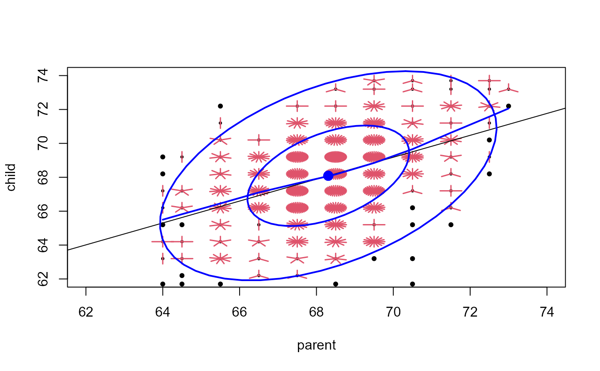

Galton's data on the heights of parents and their children
Galton.RdGalton (1886) presented these data in a table, showing a cross-tabulation of 928 adult children born to 205 fathers and mothers, by their height and their mid-parent's height. He visually smoothed the bivariate frequency distribution and showed that the contours formed concentric and similar ellipses, thus setting the stage for correlation, regression and the bivariate normal distribution.
Usage
data(Galton)Format
A data frame with 928 observations on the following 2 variables.
parenta numeric vector: height of the mid-parent (average of father and mother)
childa numeric vector: height of the child
Details
The data are recorded in class intervals of width 1.0 in. He used non-integer values for the center of each class interval because of the strong bias toward integral inches.
All of the heights of female children were multiplied by 1.08 before tabulation to compensate for sex differences. See Hanley (2004) for a reanalysis of Galton's raw data questioning whether this was appropriate.
Source
Galton, F. (1886). Regression Towards Mediocrity in Hereditary Stature Journal of the Anthropological Institute, 15, 246-263
References
Friendly, M. & Denis, D. (2005). The early origins and development of the scatterplot. Journal of the History of the Behavioral Sciences, 41, 103-130.
Galton, F. (1869). Hereditary Genius: An Inquiry into its Laws and Consequences. London: Macmillan.
Hanley, J. A. (2004). "Transmuting" Women into Men: Galton's Family Data on Human Stature. The American Statistician, 58, 237-243. See: http://www.medicine.mcgill.ca/epidemiology/hanley/galton/ for source materials.
Stigler, S. M. (1986). The History of Statistics: The Measurement of Uncertainty before 1900. Cambridge, MA: Harvard University Press, Table 8.1
Wachsmuth, A. W., Wilkinson L., Dallal G. E. (2003). Galton's bend: A previously undiscovered nonlinearity in Galton's family stature regression data. The American Statistician, 57, 190-192. https://www.cs.uic.edu/~wilkinson/Publications/galton.pdf
See also
link{GaltonFamilies},
PearsonLee,
galton in the psych
Examples
# \dontshow{
# allow to work with car 1
if (packageDescription("car")[["Version"]] < 2) {
dataEllipse <- data.ellipse
}
# }
data(Galton)
###########################################################################
# sunflower plot with regression line and data ellipses and lowess smooth
###########################################################################
with(Galton,
{
sunflowerplot(parent,child, xlim=c(62,74), ylim=c(62,74))
reg <- lm(child ~ parent)
abline(reg)
lines(lowess(parent, child), col="blue", lwd=2)
if(require(car)) {
dataEllipse(parent,child, xlim=c(62,74), ylim=c(62,74), plot.points=FALSE)
}
})
